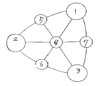

컬러리스트산업기사 (2004-03-07 기출문제)
1과목: 색채심리
1. 색채를 적용할 대상을 검토할 때 고려해야 할 조건이 아닌 것은?
- 면적효과 - 대상이 차지하는 면적
- 거 리 감 - 대상과 보는 사람과의 거리
- 공공성의 정도 - 개인용, 공동사용의 구분
- 안전규칙 - 색채선택의 안정성 검토
(정답률: 알수없음)

2. S D 법(Semantic Differential Method) 에 대한 설명이 아닌 것은?
- 색채이미지에 관한 연구법이다.
- 심층 면접방법이다.
- 오스굿(Osgoods)이라는 심리학자에 의해 고안되었다.
- 조사 대상자의 주관적인 의미를 객관적으로 평가할 수 있게 한다.
(정답률: 알수없음)
3. 지구촌의 각 지역과 민족의 색채선호가 틀린 것은?
- 라틴계 민족들은 선명한 난색계통의 의복이나 일상용품을 좋아한다.
- 피부가 희고 머리칼은 금발이며 눈이 파란 북유럽계의 민족은 한색계통을 좋아한다.
- 태양광선의 강도가 높은 곳에서는 시원한 파란색에 대한 감각이 발달하며 선호한다.
- 백야지역에서는 인간의 녹색시각이 우월하며 한색계통을 좋아한다.
(정답률: 알수없음)
4. 부정적 연상으로 절망, 죄, 죽음의 의미를 가지고 있으나 현대의 산업제품에는 세련된 색의 대표로 많이 활용되는 것은?
- 흰색
- 회색
- 보라
- 검정
(정답률: 알수없음)
5. 색채기호에 관한 설명 중 맞는 것은?
- 불황 때에는 전체적으로 밝은 색채를 좋아한다.
- 색채의 유행 경향은 주기적으로 바뀌지 않는다.
- 저소득층의 시장에서는 색채의 영역이 복잡하고 미묘한 색채를 요구한다.
- 유행의 변천에는 색채의 변천도 함께 따른다.
(정답률: 알수없음)
6. 빨간색 십자가를 응시한 후 흰 벽을 보았을 때 청록색 십자가를 보게되는 현상을 무엇이라고 하는가?
- 명도 대비
- 채도 대비
- 정의 잔상
- 부의 잔상
(정답률: 알수없음)
7. 다음 중 가장 시인성이 높은 배색은?
- 검은 바탕에 노란 글씨
- 검은 바탕에 빨간 글씨
- 하얀 바탕에 노란 글씨
- 노란 바탕에 빨간 글씨
(정답률: 알수없음)
8. 톤은 같지만 색상이 다른 배색을 무엇이라고 하는가?
- 톤 온 톤 배색
- 톤 인 톤 배색
- 세퍼레이션 배색
- 그라데이션 배색
(정답률: 알수없음)
9. 문화가 갖는 역사 또는 삶의 방식에 의하여 색채가 전하는 메시지와 상징이 달라지는데, 각 민족색채의 상징적 특징을 대표적으로 표현해 주는 상징물은?
- 상용되는 자동차 색
- 많이 팔리는 음식물의 색
- 국기 색
- 공공건물의 색
(정답률: 80%)
10. Contrast가 강한 배색의 효과가 아닌 것은?
- 정리된 이미지를 느끼게 한다.
- Sporty하고 동적인 느낌을 준다.
- 색상이나 톤을 반대의 것으로 사용하여 긴장감을 높일 수 있다.
- 색상, 명도, 채도 차가 큰 상태의 조합에 의해 생생한 이미지를 느끼게 한다.
(정답률: 알수없음)
11. '청색의 민주화(Blue Civilization)' 는 어떤 의미인가?
- 서구문화권 국가의 성인 절반 이상이 청색을 매우 선호한다.
- 성인이 되면 색채 선호도가 변화한다.
- 성별 구분 없이 청색을 선호한다.
- 지역적인 색채선호도의 차이가 있다.
(정답률: 알수없음)
12. 색채정보 수집에서 가장 많이 사용되는 방법은?
- 패널 조사법
- 현장 관찰법
- 실험 연구법
- 표본 조사법
(정답률: 알수없음)
13. 연속 배색에 대한 설명 중 맞는 것은?
- 애매한 색과 색 사이에 뚜렷한 한가지 색을 삽입하는 배색이다.
- 색상이나 명도, 채도, 톤 등이 단계적으로 변화되는 배색이다.
- 2색 이상을 사용하여 되풀이하고 반복함으로써 융화성을 높이는 배색이다.
- 단조로운 배색에 대조색을 추가함으로써 전체의 상태를 돋보이게 하는 배색이다.
(정답률: 알수없음)
14. 실내 벽면의 주조색을 조절하여 사용자가 머무는 시간이 실제보다 짧게 느껴지도록 하려면 어떤 색상을 선택하는 것이 좋은가?
- 황색
- 녹색
- 적색
- 청색
(정답률: 알수없음)
15. 색채조절에 있어서 심리효과에 대한 설명 중 틀린 것은?
- 색채의 감정적인 효과에 의해 한색계로 도색을 하면 심리적으로 시원하게 느낀다.
- 큰 기계부위의 아래 부분은 밝게 하고 윗 부분은 어두운 색으로 해야 안정감이 있다.
- 눈에 띄어야 할 부분은 진출색으로 하여 안전을 도모한다.
- 고채도의 색은 화사하고 저채도의 색은 수수하므로 이를 이용하여 적용한다.
(정답률: 알수없음)
16. 색채의 연상에 관한 내용 중 틀린 것은?
- 색의 연상에는 구체적 연상과 추상적 연상이 있다.
- 색채의 연상은 경험적이기 때문에 기억색과 밀접한 관련을 갖는다.
- 색채의 연상은 구체적 연상과 추상적 연상이 있는데, 경험과 연령에 따라서 변화하지 않는다.
- 색채의 연상은 생활양식이나 문화적인 배경 그리고 지역과 풍토 등에 따라서 개인차가 있다.
(정답률: 알수없음)
17. 사회 문화정보로서의 색은 시대 문화에 따라 다르게 적용되는 경우가 있다. 다음 중 종교, 전통의식, 신화, 예술등에서 상징적인 연결이 잘못된 것은?
- 녹 색 - 봄과 새 생명의 탄생
- 노란색 - 서양문화권에서 겁쟁이, 배신자
- 흰 색 - 서양문화권에서 장례식
- 청 색 - 기독교와 천주교의 하느님과 성모마리아
(정답률: 알수없음)
18. 맛에서 연상되는 색채이미지의 연결이 잘못된 것은?
- 단맛 - red, pink
- 짠맛 - grey
- 신맛 - yellow
- 쓴맛 - white
(정답률: 알수없음)
19. 색채연상 중 제품 정보로서의 색을 사용한 적절한 예는?
- 밀크 초콜릿의 포장지를 하양과 초콜릿색으로 구성하였다.
- 녹색은 구급장비, 상비약의 상징에 사용된다.
- 노란색은 경고를 나타낸다.
- 청량음료에 중성색 색채를 사용하였다.
(정답률: 알수없음)
20. 지역색에 관한 설명 중 잘못된 것은?
- 한 지역의 정체성을 대변하는 색채
- 특정지역의 자연환경과 자연스럽게 어울리고 선호되는 색채
- 국가나 지방의 특성과 이미지를 부각시키는 색채
- 인도의 빨강, 프랑스의 파랑과 같은 민족적 색채
(정답률: 알수없음)
2과목: 색채디자인
21. 촉감과 시각적 경험이 서로 작용하며 빛을 흡수하거나 반사하고, 색채와 직접적인 관계가 있는 것은?
- 패턴
- 질감
- 선
- 형태
(정답률: 알수없음)
22. 다음 중 색채 마케팅 전략에 가장 영향을 적게 주는 요인은?
- 인구통계적, 경제적 환경
- 보건, 위생적 환경
- 기술적, 자연적 환경
- 사회, 문화적 환경
(정답률: 알수없음)
23. 디자인의 조형요소 중 형태의 분류와 거리가 먼 것은?
- 유동형태
- 순수형태
- 자연형태
- 인위적 형태
(정답률: 알수없음)
24. 사람들이 살아가고 시간과 돈을 쓰는 상태를 무엇이라 하는가?
- 생활유형(life style)
- 생활주기(life cycle)
- 이미지 맵(image map)
- 마케팅(marketing)
(정답률: 알수없음)
25. 환경디자인의 유의점이 아닌 것은?
- 인공시설물을 제외 시킨다.
- 환경색으로서 배경적인 역할의 고려
- 재료의 자연색 존중
- 광선 온도 기후 등 조건의 고려
(정답률: 82%)
26. 미용색채에서 외향적이고 활달하며 명랑한 개성을 나타내고자 할 때 적합한 입술색은?
- 진한 핑크색 계열
- 라이트 블루 계열
- 따뜻한 오렌지 계열
- 퍼플계의 차분한 색
(정답률: 알수없음)
27. 다음 디지털 색채관리 시스템에 관한 설명 중 맞는 것은?
- 디바이스 종속 색체계는 인간의 시감체계와 관계가 있다.
- 상호 호환이 가능하도록 하기 위해서 디바이스 독립적인 색체계를 사용하지 않는다.
- 고품질의 색채 구현을 위해서는 반드시 색영역 맵핑이 이루어져야 한다.
- 전자 장비들 간에 RGB 정보가 호환성이 없는 이유는 입력장비는 같은 감광도를 가지고 있으나 모니터 화면의 표면에 코팅하는 여러가지 물질이 각각 서로 다르기 때문이다.
(정답률: 알수없음)
28. 문화와 언어를 초월해서 직관적으로 이해할 수 있도록 한 그림문자로서의 그래픽 심볼은?
- 일러스트레이션
- 다이어그램
- 픽토그램
- 타이포그래피
(정답률: 알수없음)
29. 소비자들이 가지고 있는 제품의 인지도와 상표에 대한 이미지가 타 상품과 차별화된 상태를 무엇이라 하는가?
- 제품 포지셔닝
- 마케팅 믹스
- 머천다이징 계획
- 디자인 컨셉
(정답률: 알수없음)
30. 공공적인 건축공간은 목적에 맞는 색채 환경으로 만들 필요가 있다. 이들의 색채조절을 위해 만족시켜야 할 다음 요인 중 비교적 거리가 먼 것은?
- 능률성을 높인다.
- 안전성을 높인다.
- 쾌적성을 높인다.
- 주목성을 높인다.
(정답률: 알수없음)
31. 시각 전달 디자인(visual communication design)의 영역이 아닌 것은?
- 일러스트레이션(illustration)
- 타이포그래피(typography)
- 편집 디자인(editorial design)
- 스트리트 퍼니쳐(street furniture)
(정답률: 알수없음)
32. 20세기 초 이탈리아에서 일어난 전위예술운동으로 기존의 낡은 예술을 모두 부정하고, 기계 세대에 어울리는 새로운 다이나믹한 미를 창조할 것을 주장하며, 주로 하이테크 소재로 색채를 표현한 예술사조는?
- 아방가르드(Avant-garde)
- 미래주의(Futurism)
- 옵 아트(Op Art)
- 플럭서스(Fluxus)
(정답률: 알수없음)
33. 미용디자인에서 고려해야 할 다음 내용 중 가장 우선시되지 않는 것은?
- 보건위생상의 안전
- 시대적 유행성
- 작업자의 의도
- 고객의 미적 욕구
(정답률: 알수없음)
34. 패션디자인의 원리에 대한 다음의 설명 중에서 가장 적절한 것은?
- 균형은 디자인 요소의 시각적 무게감에 의하여 이뤄진다.
- 리듬은 디자인의 요소 하나가 크게 강조될 때 느껴진다.
- 강조는 디자인의 요소가 반복될 때 느껴진다.
- 비례는 디자인 내에서 부피감의 관계를 의미한다.
(정답률: 알수없음)
35. CCM(Computer Color Matching)의 도입목적이 아닌 것은?
- 원가절감
- 조색의 시간 단축
- 고객의 신뢰도 구축
- 숙련자를 위한 조색 기능
(정답률: 알수없음)
36. 다음 중 사조별 색채경향이 틀리게 연결된 것은?
- 아르누보 - 연한 파스텔 계통의 부드러운 색조
- 아방가르드 - 그 시대의 유행색보다 앞선 색채사용
- 큐 비 즘 - 난색의 강렬한 색채
- 다다이즘 - 파스텔 계통의 연한 색조
(정답률: 알수없음)
37. 기업, 단체, 행사, 제품 등 특정 대상의 성격에 맞는 시각적 상징물을 무엇이라 하는가?
- 캐릭터
- 카툰
- 캐리커쳐
- 스케치
(정답률: 알수없음)
38. 다음 중 시대적 디자인 의미로 올바른 것은?
- 1980년대 - 부가장식으로서의 디자인
- 1910년대 - 기능적 표준형태로서의 디자인
- 1980년대 - 양식으로서의 디자인
- 2000년대 - 사회적 기술로서의 디자인
(정답률: 알수없음)
39. 1950년대 미국에서 보급되기 시작한 색채계획의 시대적 배경에 관한 설명 중 가장 부적합한 것은?
- 과학 기술의 발전에 따른 생산방식의 공업화
- 패션 디자인의 관심 고조
- 인공착색 재료와 착색기술의 발달
- 기능주의의 출현
(정답률: 알수없음)
40. 바우하우스 출신으로 울름디자인대학을 설립한 사람은?
- 발터 그로피우스
- 알 프레드바아
- 막스 빌
- 모흘리 나기
(정답률: 알수없음)
3과목: 섹채관리
41. 국제조명위원회(CIE)의 색채 측정 체계에 대한 설명으로 맞는 것은?
- CIE에서는 빨강,초록,파랑 3원색 이론으로 출발한다.
- 현색계의 대표적인 예이다.
- 감법 혼색의 원리를 기본으로 한다.
- 백색광은 색도도 바깥 둘레에 위치한다.
(정답률: 알수없음)
42. 컬러모니터의 영상색채를 컬러프린터로 출력하려면 모든 색채를 정확하게 전환할 수 없기 때문에 적절한 방법으로 정해진 색채구현체계 내에서 최적으로 색채가 재현되도록 만드는 것을 무엇이라 하는가?
- 색역 매핑(color gamut mapping)
- 컬러 어피어런스 모델(color appearance model)
- 디바이스 특성화(device characterization)
- 감마 조정(gamma control)
(정답률: 알수없음)
43. 디지털 업무에 있어서 필수적인 3단계를 거쳐 수행되는 작업이 아닌 것은?
- 자료 입력
- 자료 조작
- 자료 조사
- 결과물 출력
(정답률: 알수없음)
44. 육안조색시의 기준 조색 광원은?
- D45
- D75
- D65
- D55
(정답률: 알수없음)
45. 다음 중 속건성의 '래커'는 무엇의 일종인가?
- 천연수지 도료
- 합성수지 도료
- 합성염료
- 광물염료
(정답률: 알수없음)
46. 수치 데이터를 이용하거나 주어진 색표를 가지고 색을 만드는 작업을 무엇이라 하는가?
- 염료
- 안료
- 조색
- 색소
(정답률: 알수없음)
47. 다음 중 가법 혼색의 원리가 적용되는 장치는?
- CRT, LCD monitor
- Digital press
- Toner printer
- Offset press
(정답률: 알수없음)
48. 점광원이 일정 방향으로 내는 에너지량을 말하며 칸델라(cd)를 단위로 하는 것은?
- 광도
- 휘도
- 조도
- 전광속
(정답률: 알수없음)
49. 클로로필 색소에 대한 설명이 바른 것은?
- 크로커스 꽃가루에서 얻어진다.
- 중앙에 마그네슘 원자를 갖고 있다.
- 중앙에 구리 금속을 가지고 있다.
- 흡수가 오렌지와 노랑색에서 강하게 일어난다.
(정답률: 알수없음)
50. 다음 중에서 CCM(computer color matching)의 반사값을 읽어 내는 데 가장 적합한 파장의 범위는?
- 380-740nm
- 260-620nm
- 450-890nm
- 640-950nm
(정답률: 알수없음)
51. 물체의 색을 측정하는 방법 d/0에 관한 설명이다. 맞는 것은?
- 수직으로 입사시키고 분산광을 관측
- 분산광을 입사시키고 수직 방향에서 관측
- 물체면에 수직 입사시키고 45° 방향에서 관측
- 물체면에 수직 입사시키고 수직 방향에서 관측
(정답률: 알수없음)
52. 다음 중에서 현재 한국산업규격(KS)상의 현색계 색표집은 어떤 색체계에 기본을 두고 있는가?
- N.C.S
- D.I.N
- O.S.A/U.C.S
- Munsell
(정답률: 알수없음)
53. 반사갓을 사용하여 광원의 빛을 모아 비추는 조명방식으로 조명 효율이 좋은 반면 눈부심이 일어나기 쉽고 균등한 조도 분포를 얻기 힘들며 그림자가 생기는 조명 방식은?
- 반간접조명
- 직접조명
- 간접조명
- 반직접조명
(정답률: 알수없음)
54. 어떠한 색채가 주변의 색이나 조도(照度), 광원, 매체 등이 각기 다른 환경에서 볼 때 다르게 보여지는 현상을 무엇이라 하는가?
- ICM File 현상
- 색영역 맵핑 현상
- 디바이스의 특성화
- 컬러 어피어런스 현상
(정답률: 알수없음)
55. 다음 중 안료에 대한 설명 중 옳은 것은?
- 굵은 분말의 형태로 투명하고 은폐력이 적다.
- 물에 잘 녹는다.
- 동굴벽화시대에 채색에 사용하였다.
- 형광표백제로 무명, 종이, 양모, 합성섬유, 합성수지, 펄프 등을 보다 희게하기 위해 사용된다.
(정답률: 알수없음)
56. 디지털 색채에 대한 다음 설명 중 올바른 것은?
- 디지털 컬러에서 각 픽셀은 RGB의 조합으로 표현된다
- 오프셋인쇄는 가색법을 사용한다.
- TV와 모니터는 감색법을 사용한 대표적인 예이다.
- 혼합하는 색의 수가 많을수록 혼합결과 색의 명도가 높아지게 되는 것은 감색색체계에 의한 원리이다.
(정답률: 알수없음)
57. 다음은 육안과 측색기의 차이를 설명한 것이다. 틀린 것은?
- 인간의 삼원색 지각체계와 스펙트럼 측정체계의 차이
- 감성적인 주관적 판단의 차이
- 인간 고유의 항상성 기능의 차이
- 시감측색 표기는 오스트발트기호로 하고, 측색기는 먼셀기호로 표기하기 때문
(정답률: 알수없음)
58. 다음 중 안료를 이용하여 채색하는 것으로 가장 옳은 것은?
- 피혁의 염색
- 직물섬유의 염색
- 자동차의 내장 및 외면의 표면코팅
- 인조털의 염색
(정답률: 알수없음)
59. 색채의 육안 조절시 주의하여 관측할 색차의 내용에 속하지 않는 것은?
- 색료의 종류 및 양
- 명도의 차이
- 색상의 방향과 정도
- 채도의 차이
(정답률: 알수없음)
60. 두 가지의 물체색이 다르더라도 특수한 조명 아래에서는 같은 색으로 느껴지는 현상은 무엇인가?
- 연색성
- 항상성
- 조건등색
- 푸르키니에 현상
(정답률: 알수없음)
4과목: 색채지각의이해
61. 의상 디자이너가 콘서트를 여는 가수를 위해 여러 가지 의상을 고르려 한다. 보다 리듬이 강하고 빠른 곡들을 부르는 단계에 있어서 갈아입어야 할 의상으로 어떤 것이 적절하겠는가?
- 연보라
- 빨강
- 회색
- 녹색
(정답률: 알수없음)
62. 광선 중에는 눈의 가시한계 범위 내에서 주간에 최대시감도를 느끼게 하는 것이 있다. 다음 중 그 광선의 색채는?
- 주황색
- 적색
- 청색
- 연두색
(정답률: 알수없음)
63. 색채의 감정효과에 관한 내용으로 가장 타당성이 낮은 것은?
- 명도가 높은 색이 가벼운 느낌을 준다.
- 채도가 높은 색이 후퇴하는 느낌을 준다.
- 명도가 높은 색이 진출하는 느낌을 준다.
- 채도가 높은 색이 강하고 딱딱한 느낌을 준다.
(정답률: 알수없음)
64. 무대 위 흰 벽면을 빨간색 조명과 녹색 조명을 서로 동시에 비추었을 때 어떤 색으로 보이는가?
- 흰색
- 노란색
- 회색
- 주황색
(정답률: 알수없음)
65. 조명의 강도가 바뀌어도 물체의 색을 동일하게 지각하는 현상은?
- 색순응
- 색지각
- 색의 항상성
- 색각이상
(정답률: 알수없음)
66. 인쇄 과정 중에 원색분판 제판과정에서 시안분해 네거티브 필름을 만들기 위해 사용하는 색 필터는?
- 시안색 필터
- 빨간색 필터
- 녹색 필터
- 파란색 필터
(정답률: 알수없음)
67. 간판의 글씨를 잘 보이게 하고 싶다. 어떻게 색을 처리하는 것이 가장 좋은가?
- 배경색과 글씨는 유사색대비 효과를 고려한다.
- 배경색과 글씨는 명도 차를 고려한다.
- 배경색과 글씨는 모두 후퇴하는 색을 고려한다.
- 배경색과 글씨는 모두 진출하는 색을 고려한다.
(정답률: 알수없음)
68. 여러 가지 파장의 빛이 고르게 섞여 있을 때 지각되는 색은?
- 녹색
- 파랑
- 검정
- 백색
(정답률: 알수없음)
69. 서로 다른 두 색이 인접해 있을 때 인접부분에서 색상, 명도, 채도대비가 더욱 강하게 발생하는 현상은?
- 면적대비
- 명도대비
- 연변대비
- 한난대비
(정답률: 알수없음)
70. 다음 중 19세기 인상파 화가 '쇠라'에 의한 점묘화의 혼색원리는?
- 회전혼색
- 병치혼색
- 감법혼색
- 동시혼색
(정답률: 알수없음)
71. 색료 혼합의 3원색에 해당하지 않는 것은?
- 마젠타(Magenta)
- 노랑(Yellow)
- 녹색(Green)
- 시안(Cyan)
(정답률: 알수없음)
72. 작은 견본을 보고 옷감을 골랐더니 완성된 옷의 색상이 견본색보다 강하게 느껴졌다. 이는 색채의 어떤 효과로 인한 것인가?
- 색상대비
- 면적대비
- 채도대비
- 명도대비
(정답률: 알수없음)
73. 비누 거품이나 수면에 뜬 기름에서 무지개 같은 색이 보이는 것은?
- 표면색
- 형광색
- 경영색
- 간섭색
(정답률: 알수없음)
74. 다음 중 가장 차갑게 느껴지는 색상은?
- 밝은 파랑
- 밝은 황록
- 밝은 노랑
- 어두운 빨강
(정답률: 알수없음)
75. 동시대비 설명 중 틀린 것은?
- 색차가 클수록 대비현상이 강해진다.
- 자극과 자극사이에 거리가 멀어질수록 대비현상은 약해진다.
- 자극을 부여하는 크기가 클수록 대비의 효과가 커진다.
- 시점을 한 곳에 집중시키려는 색채지각 과정에서 일어나는 현상이다.
(정답률: 알수없음)
76. 옷을 염색하고자 염료 Y10R와 R10Y를 각각 반반씩 배합했을 때, 염색된 천은 어떤 색이 되겠는가?
- 마젠타
- 주황
- 녹색
- 연두
(정답률: 알수없음)
77. 파란 하늘, 노란 튤립과 같이 색을 지각할 수 있는 광수 용기는?
- 간상체
- 수정체
- 유리체
- 추상체
(정답률: 알수없음)
78. 프리즘으로 빛을 분광시키는 것은 빛의 어떤 성질을 이용한 것인가?
- 반사
- 투과
- 굴절
- 흡수
(정답률: 알수없음)
79. 의료공간인 수술실의 주조색은 청록색이 바람직하다고 한다. 이것은 수술하는 의료진들에게 어지러움을 방지하고 눈을 편안하게 해주기 위한 것인데 다음 내용 중 가장 밀접한 연관성이 있는 것은?
- 대비
- 동화
- 잔상
- 흥분
(정답률: 알수없음)
80. 다음 중 진출감이 가장 약한 색은?
- 난색
- 고명도색
- 저채도색
- 고채도색
(정답률: 알수없음)
5과목: 색채체계의이해
81. 먼셀의 균형이론에 영향을 받은 색채 조화론은?
- 슈브롤의 조화론
- 문.스펜서 조화론
- 파버 비렌의 조화론
- 저드의 조화론
(정답률: 알수없음)
82. 색의 삼속성에 기반을 두고 색채를 삼차원적인 공간에 질서정연하게 계통적으로 배치한 삼차원적 표색 구조물의 명칭은?
- 색입체
- 색상환
- 등색상 삼각형
- 회전원판
(정답률: 알수없음)
83. 파베비렌의 색삼각형이다. White, Tone, Shade 의 조화 관계를 나타낸 것은?

- 1-2-3
- 2-4-7
- 1-4-6
- 2-6-3
(정답률: 알수없음)
84. CIEL*a*b*의 색값으로 맞는 것은?
- +a*, +b* 값의 색은 보라색(RB)이다.
- +a*, -b* 값의 색은 청록색(BG)이다.
- -a*, +b* 값의 색은 연두색(GY)이다.
- -a*, -b* 값의 색은 주황색(YR)이다.
(정답률: 알수없음)
85. NCS 표색계에 대한 내용이 아닌 것은?
- 헤링의 반대색설에 근거한다.
- 독일 색채연구소에서 개발하였다
- 환경친화적 색표를 사용하여 1750개의 색채샘플이 만들어져 있다.
- 색채에 대한 표준을 제시하여 업계간 칼라 커뮤니케이션의 원활화를 도모하였다.
(정답률: 알수없음)
86. 색각의 생리· 심리원색을 바탕으로 하는 오스트발트 표색계에서 사용하는 색채표시 방법은?
- S2030-Y90R
- 20lc
- 4YR4/10
- 3:yR
(정답률: 알수없음)
87. 먼셀 색체계의 설명으로 맞는 것은?
- 먼셀은 모든 색채를 색상, 명도, 채도의 총합이라고 정의하였다.
- 먼셀의 색입체는 복원추체이다.
- 중심의 세로축에 채도축을 두고, 원주상에 색상, 중심에서 방사선으로 명도를 구성하였다.
- 먼셀 표색계의 기본색은 빨, 주, 노, 초, 파의 다섯가지이다.
(정답률: 알수없음)
88. 황색계열의 전통색은?
- 훈색
- 홍람색
- 치자색
- 육색
(정답률: 알수없음)
89. 오스트발트 체계에서 등백색계열의 조화로 설명될 수 있는 것은?
- 6nn-6nl-6ni
- aa-cc-ee
- 5pa-5na-5la
- 17na-17pc-17la
(정답률: 알수없음)
90. 문.스펜서 조화론의 미도와 관계없는 것은?
- 배색의 아름다움을 계산을 통해 수치적으로 표현한 것이다.
- M(미도)=O/C로 계산된다.
- 미도 계산식에서 O는 복잡성의 요소이다.
- 미도가 0.5 이상이면 조화롭다고 한다.
(정답률: 알수없음)
91. 색채 표준화의 기본적인 조건에 해당하지 않는 것은?
- 색채 속성배열의 과학적 근거
- 색채의 속성(색상,명도,채도)표기
- 색채간 지각적 등보성
- 특수 안료의 사용
(정답률: 알수없음)
92. P.C.C.S에 대한 설명으로 옳지 않은 것은?
- 20가지의 명도 단계로 이루어져 있다.
- 색조로 색공간을 설정하고 있다.
- 일본색채연구소가 1964년에 발표한 색체계이다.
- 8:Y-8.5-7s와 같은 형식으로 표기한다.
(정답률: 알수없음)
93. NCS 표색계의 색채 표기법에 따른 S2030-Y90R에서 2030이 나타내는 것은?
- 20 : 검정색도, 30 : 유채색도
- 20 : 유채색도, 30 : 검정색도
- 20 : 유채색도, 30 : 무채색도
- 20 : 백 색 도, 30 : 검정색도
(정답률: 알수없음)
94. 오스트발트 색체계의 표기방법으로 맞는 것은?
- 뉘앙스와 색상으로 표시
- 색상, 명도, 채도 순으로 표시
- 색상, 흑색량, 백색량의 순으로 표시
- 색상, 백색량, 흑색량의 순으로 표시
(정답률: 알수없음)
95. CIE에 대한 설명으로 틀린 것은?
- 가법혼색의 원리에 근거한다.
- 영.헬름홀쯔에 의한 빨강, 초록, 청자 등의 3원색 이론에서 출발하였다.
- 맥스웰의 RGB표색계에서 기원한다.
- 감법혼색의 원리에 근거한다.
(정답률: 알수없음)
96. 오스트발트의 색채조화원리가 아닌 것은?
- 등백계열의 조화
- 등흑계열의 조화
- 등보계열의 조화
- 등가색환의 조화
(정답률: 알수없음)
97. 먼셀표색계에 대한 설명 중 틀린 것은?
- 먼셀이 19⑤년에 창안한 것이다.
- 지금 사용하는 것은 수정 먼셀표색계이다.
- 우리나라에서도 표준색표로 채택하고 있다.
- 수정먼셀표색계는 기호표시방법의 변화가 있었다
(정답률: 알수없음)
98. 색채조화의 기초적인 사항이 아닌 것은 ?
- 색상, 명도, 채도의 차이가 기초가 된다.
- 대립감이 조화의 원리가 되기도 한다.
- 유사의 원리는 색상, 명도, 채도 차이가 적을 때 일어난다.
- 유사한 색으로 배색하여야만 조화가 된다.
(정답률: 알수없음)
99. 먼셀의 색채조화원리 중 무채색의 조화원리 설명으로 맞는 것은?
- 다양한 무채색의 평균명도가 N2가 될 때 조화로운 배색이 된다.
- 다양한 무채색의 평균명도가 N3이 될 때 조화로운 배색이 된다.
- 다양한 무채색의 평균명도가 N5가 될 때 조화로운 배색이 된다.
- 다양한 무채색의 평균명도가 N9가 될 때 조화로운 배색이 된다.
(정답률: 알수없음)
100. 한국의 전통색채 및 색채의식에 관한 설명이 아닌 것은?
- 음양오행사상을 표현하는 상징적 의미의 표현수단으로서 이용되어 왔다.
- 계급서열과 관계없이 서민들에게도 모든 색채사용이 허용되었다.
- 한국의 전통색채 차원은 오정색과 오간색의 구조로 이루어진다.
- 색채의 기능적 실용성보다는 상징성에 더 큰 의미를 두었다.
(정답률: 알수없음)